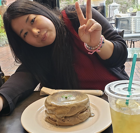
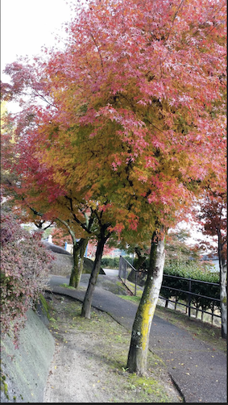

プロフィール
名前→伊藝 舞子 (ｲｹﾞｲ ﾏｲｺ)
出身→沖繩県
好きな食べ物

肉とラーメン好きです。このレモンラーメン衝撃でした。限定メニューで一回しか食べられなかったのが残念。今はもう閉店していてないお店。また食べたいな…。
ご当地ソフトは必ず食べます。栗ソフトまた食べたい。可愛いの派手なの意外に好きです！
趣味
神社好きです。癒されます。ちなみに厳島神社です。ただ行きたいだけなやつ。
旅行先で探して行きます。今気になるのはクラゲのいる水族館。アクアパーク品川が凄いらしい。ネット情報！

季節を感じるの好きで季節が変わると旅行したくなります。今年は沖縄の桜しか見てない…
たまに乗ると楽しい。大人になって乗ったジェットコスター。怖かった。
趣味